A KLF Terraplanagem oferece serviços especializados com mini escavadeira, garantindo eficiência e precisão em cada projeto. Realizamos valas para drenagem, nivelamento de solo para construção, escavação de valas para fundações na construção civil e limpeza de tanques. Com equipamentos modernos e experiência no setor, entregamos resultados de qualidade, otimizando o tempo e os recursos da sua obra.
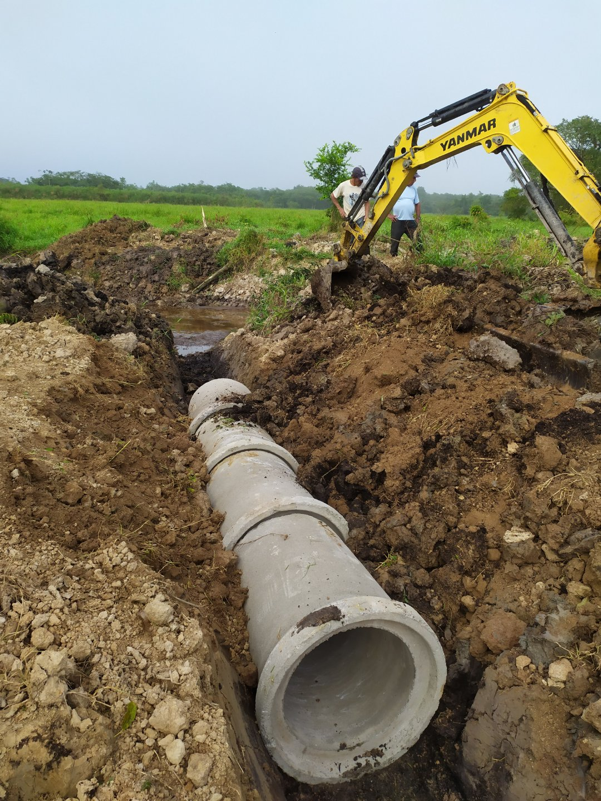
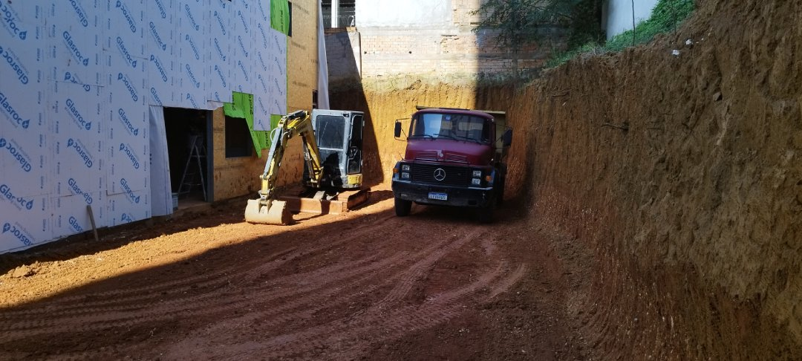
 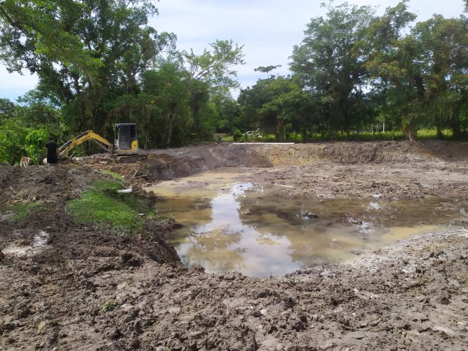
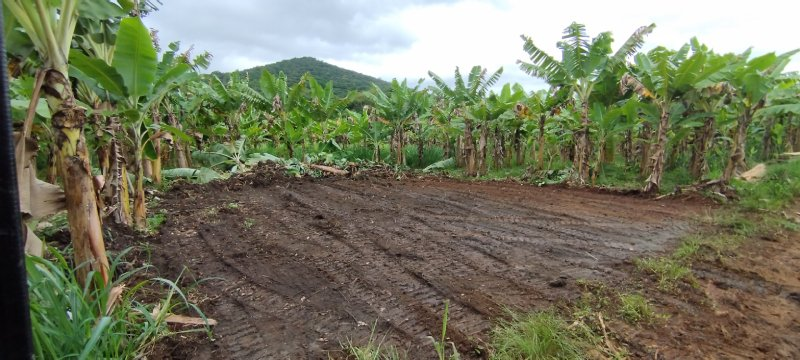
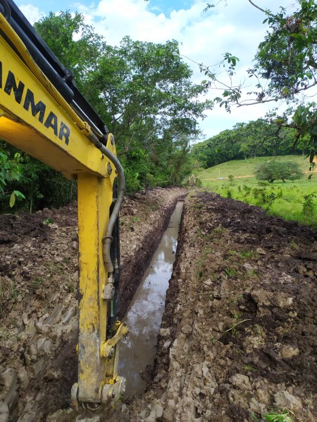
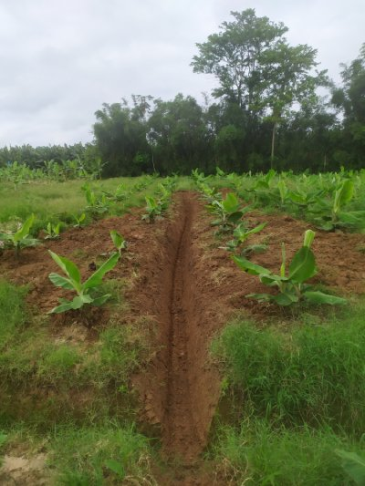
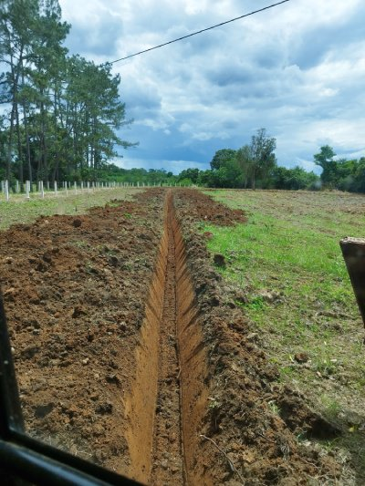
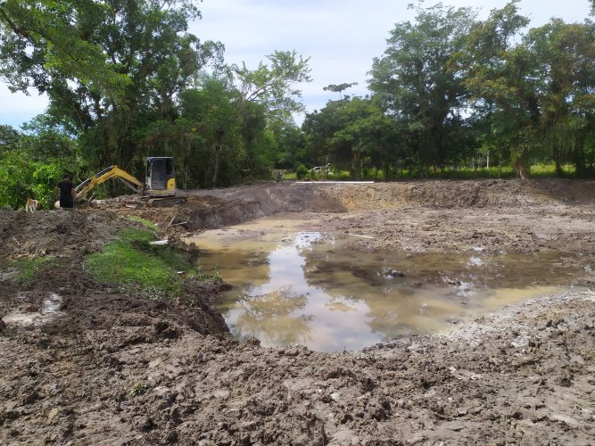
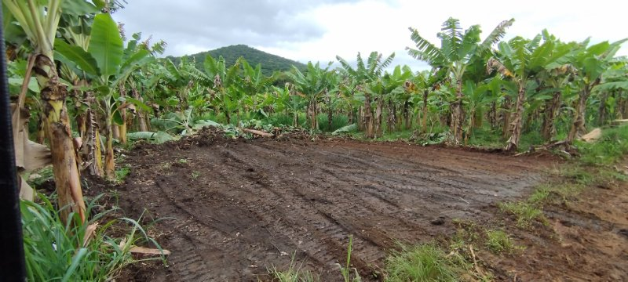
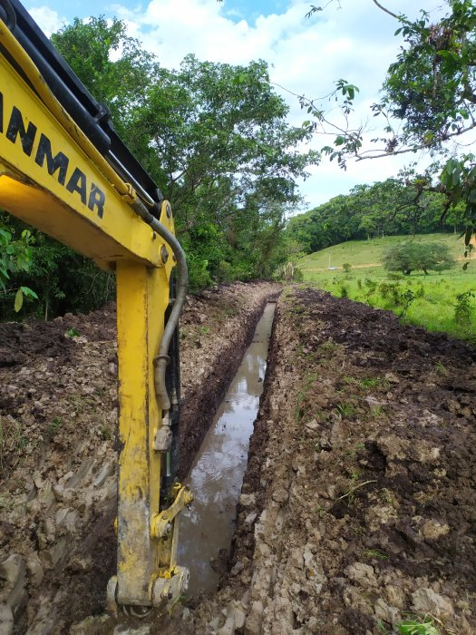
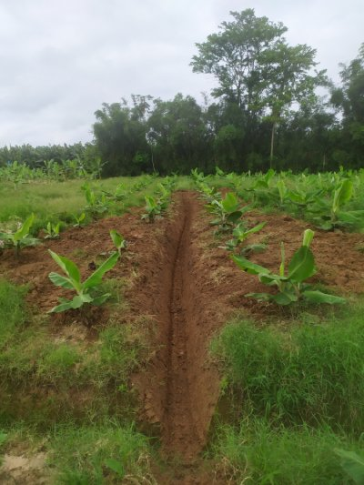
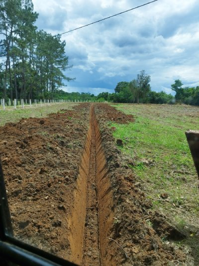
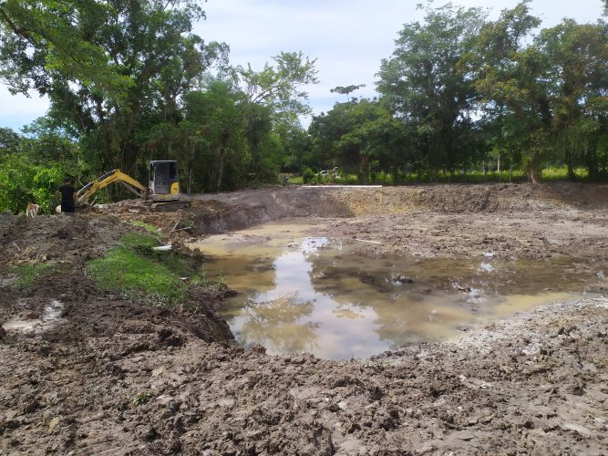
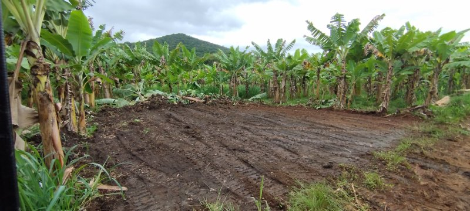
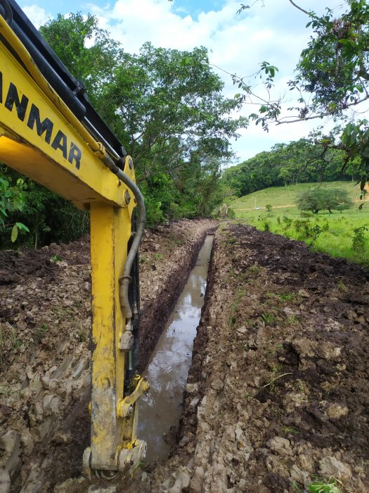
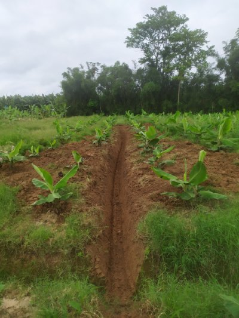
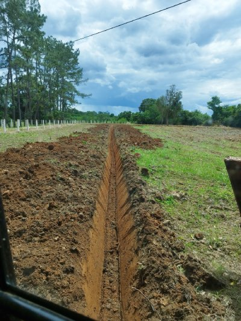